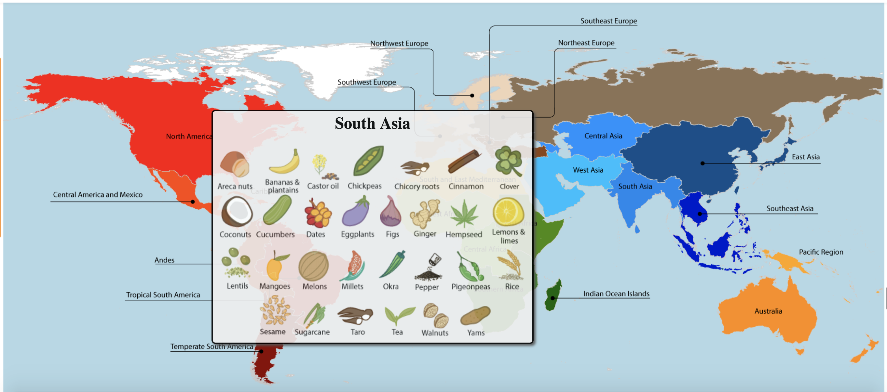
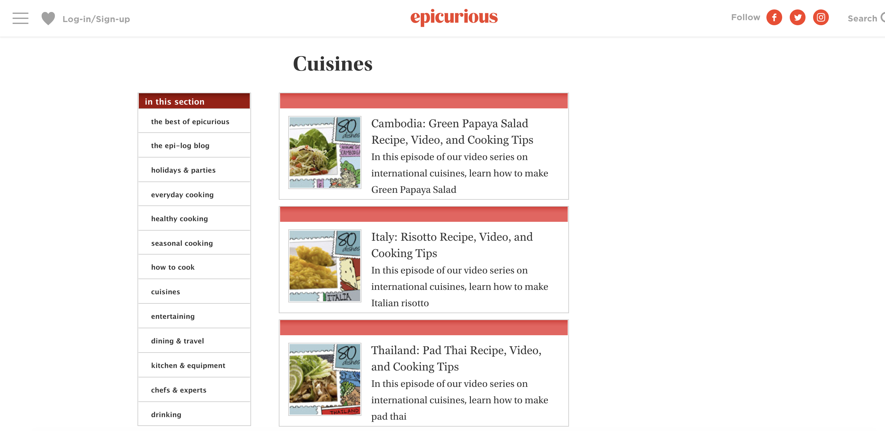

For my project, I decided to focus on the topic of food. I want to create an interactive that can show users where different ingredients come from and recipes to cook local cuisines from that region. To investigate more about similar interactives and websites to my topic, I took to Google to search food recipes around the world. I found one article that spotlighted an interactive project that showed regions of the world that grew particular ingredients. They tied these into their diets and showed how they were similar or different around the world. Next, I looked up a cooking website that showcased recipes from different cuisines. I have found that Epicurious and BBC GoodFood both have great recipes from around the world, however, the interaction design is boring and a let down for both sites. I would like to make a cleaner more exciting app or website to merge the two ideas.
 The interaction map is quite interesting. When the user hovers over the color coded map, a box of ingredients appears that is common to the region. Then it shows a further study of how the ingredients are incorporated into the diets of the people from the region. It showcases diversity by revealing the crops that people use and where they come from.